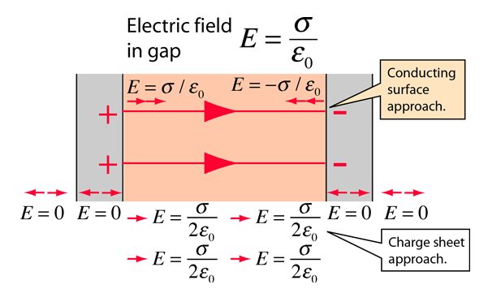

Figure the ionic basis of a membrane potential shows and explains the case introduced by separating the cell into two segments by a finite-width membrane; although does not explain even qualitatively, why the ions behave apparently against the laws of thermodynamics: the left and right sides of the figure are apparently identical. On the left side (the case of infinitely thin membrane), at an exact balance of charges on each side, the potential across the membrane is zero. We explain that the finite thickness will result in a lack of balance (introduces inhomogeneity and creates a voltage and concentration gradient) proximal to the surfaces of the membrane, even if the concentrations on the two sides are the same. Changing the bulk concentration or potential in one of the segments creates a corresponding gradient across the separating membrane that increases the inhomogeneity proximal to the membrane. The ions will experience an extra force due to the gradient, but the mechanical counterforce of the membrane will keep them back in the segment. The concentration and potential, inseparably and having the same time course, will change across the two sides of the membrane just because of the gap’s physical features the membrane represents.
We consider that the segment is composed of electrically conducting discs (the ions are free to move on the surface) and the charged discs’ contribution to the electrical field at point (see Fig. 3.3) can be calculated as known from the theory of electricity. Due to the symmetry in direction of , in a homogenous solution, the resulting electrical field in the plane perpendicular to direction is zero: we have contributions of the same size with opposite signs.
Here we used the abstraction of an infinitely thin ”charged sheet” and that there is a step-like gradient in the electrical field in the gap. The physical reality is that the charge is represented by ions, which simultaneously represent a mass; furthermore, the thickness of the surface layer they form is by orders or magnitude thicker than the layer that the electrons form. In an equilibrium state, the forces due to the voltage and concentration gradients (see Eq.(1.1)) must be counterbalanced by an external force. An interference between science disciplines can also manifest here. We know at the same time that at the boundaries of electrolytes, different interfaces, including electrically neutral electrical double layers, can be formed by only partly known processes [53]. The presence of those structures makes drawing quantitative conclusions hard.
When discussing the internal electrical operation of a neuron, first we consider a condenser that obeys laws of classical electricity and has the geometrical size of a biological neuron. We apply the physics terms to that pseudo-biological object and test whether the values we derive are consistent with physiological phenomena. A tiny (according to [23], page 12, about ) portion of the positive ions leave their negative counterions behind and form a thin positively charged ion layer on the surface of the membrane (of course, the same happens on the opposite side with negative ions). Experience shows, that – also in biology – two very thin (but not infinitely thin) layers of ions are formed on the two sides of the membrane, see the caption of figure (Fig. 11.22 in [24]): ”The ions that give rise to the membrane potential lie in a thin () surface layer close to the membrane”. The two surfaces get covered by a sub-nanometer-thick conducting layer, on the top of a nanometer thick insulator. So, we model the cell with two finite-width ”conductive sheet” layers. These layers represent an electrical condenser (so we can calculate the internal electrical field between the plates) and they counterbalance each other’s electrical field outside the condenser. We may assume that the solid surface represents the needed counterforce to keep the charges in rest.
One cannot expect geometrically plane surfaces: there are some biological objects of up to size on the surface. So, we assume a physical ’uniformly charged sheet’ with an average thickness on the surface. For the sake of simplicity, we assume a step-like function for the electrical field. It is zero in the segment outside the ”conducting sheets” (the ’bulk’ portions) as well as inside the sheets. Between the sheets, it jumps to the value of the electrical field of a charged sheet with surface density (see Eq.(3.20)). (In this picture we see that there is a jump in the value of the electrical field (and so: in the force acting on a charge) in the two sides of the physical layer. Here we still assume that a mechanical counterforce due to surface’s roughness keeps the charges in place inside the charged layer.)
We assume that all unbalanced (dissociated) ions are in the layer, and the rest contains no dissociated ions, furthermore, that the ions’ concentration is unchanged in the segment. By assuming a thick layer on the surfaces of the membrane, our model delivers an electrical field (see Eq.(3.21))
| (5.6) |
In the case of a solution and a ’thin physical layer’ it evaluates to an electrical field
and at a membrane thickness the voltage across the plates becomes
| (5.7) |
The number of uncompensated ions needed for the cell, using the method in [23], is . Remarkably, the calculated values are about by a factor of lower than the experimentally derived values. ”An electrical potential difference about … exists across a plasma membrane only about thick, so that the resulting voltage gradient is about ” [24]. ”The number of uncompensated ions needed for the cell is ” [23]. We are in the right order of magnitude but we arbitrarily assumed a layer thickness, a non-dielectrical medium. Furthermore, given that the charges are distributed uniformly in the layer, the electrical field changes linearly between the two sides of the conducting sheet. The deviation from the experienced values suggests that the dipoles’ presence in the electrolyte bulk significantly changes the achievable electrical field and potential across the plates. Our simple model seems to be a strong oversimplification.

If the distance between the plates is finite, the resulting electrical field will differ from zero. With such a model, a usual parallel plate condenser can be derived, as shown in Fig. 5.2. We have two charged disks (infinite conducting sheets), and an insulator layer between them. In the classical picture, the opposite charges’amount on the two plates must be the same. As shown, a constant electrical field is present inside the membrane (across the plates of the condenser) and zero electrical field inside the parallel conducting plates, as well as outside the condenser. In this ideal picture, the charges are aligned on the border of two (infinitely thin) conducting layers and cannot move. Anyhow, the attractive force between the opposite charges on the plates keeps them fixed in direction of . The repulsive force between the charges with the same sign keeps their surface density in the plane uniform: the infinitely thin plates are equipotential. The strong electrostatic force can produce an enormous acceleration for the individual ions, but the thermodynamic gradient can only change with a several orders of magnitude lower speed, allowing measurable changes in the current intensity on the surface). This picture is valid for the equilibrium state of charges, infinitely small non-dissociating charge carriers and perfectly smooth surfaces.
Figure 5.3 (the blue diagram lines) show the electrical field around the neuronal membrane. In this picture we see that there is a jump in the value of the electrical field (and so: in the force acting on a charge) in the two sides of the physical layer and we assume that the physical layer somehow emulates the well-defined boundary on the side opposite to that proximal to the membrane.
Fig. 5.3 displays how the function shapes of electrical field change in the function of the distance from the membrane. As discussed, the physical distance between two two segments with electrical charge causes a charge condensation on the surface of the separating membrane. In the case of classic condenser, this primary charge density is abstracted as an infinitely thin layer of charges (electrons) on an ideally plain layer, and the rest of the volume is abstracted that no charge carrier is included. This case is perfectly described by the classic electricity theory. In the case of electrolytes, the separating membrane’s surface is not ideal, furthermore the electrostatic force can press some biological objects to the surface, so we must assume that the primary charge forms a uniformly charged layer with finite thickness on the surface. In the uniformly charged layer the electrical field is a linear function of the distance from the surface. The presence of dielectrical molecules in the rest of the volume creates secondary (virtual) dipole charges, that contribute to the electrical field, as shown. The two fields join to each other at the boundary of the charged layer. The electrical field on the surface of the membrane is the sum of those two fields. The opposite charges on the other plate generate another electrical field in the opposite direction.
As shown in the figure, the field steeply rises near to the membrane. At the membrane surface, it reaches its maximum value; on both sides of the membrane. Inside the membrane, there are no charges, so the field remains contant, for both types of condensers. Notice that the classic condenser can be considered as the abstraction of the real condenser to the case of zero dielectricity.
The electrical field acts on the ions, but there may be present a mechanical counterforce, plus a thermodynamic force aring from the difference of ions’ concentrations. (We just notice here that the electrical driving force does not depend on the chemical type of the ions, but the thermodynamic force does. The mechanical counterforce is adaptive, per ion, so it can keep different types of ions in rest.) If there are ’holes’ (ion channels) in the membrane, there is no mechanical counterforce, so the ions could move under the effect of the difference between the electrical and thermodynamic forces. The latter depends on the chemical nature of the ions, so it natively provides selectivity: the resulting forces are different for ions of different types. The usual ”downhill” method of explanation must be corrected: the resulting potential instead of the electrical potential defines how the ions move.
The figure shows two ions (green and red) at the axis of the ion channel in two positions (the empty circles along the axis of the ion channel), at the beginning and end of a movement, when the ion channel is open. On the diagram lines, filled circles show the electrical fields on the diagram lines at the position of the ions.
In the charged layer the ion density is constant, that is the thermodynamic force is zero while the electrical force decreases with the distance from the membrane’s surface
If the channel opened, the mechanical counterforce cancels, the ions will move under the effect of the resulting force, that comprises not only the thermodynamic and electrical forces, but also the force to move the ion with the Stokes-Einstein speed. In the position at the entrance of the ion channel (see the red ions), if the channel is open, the large thermodynamic and electrical forces ’push’ the ions into the channel. Here the concentration gradient quickly cancels, but the huge potential gradient will accelerate it toward the other segment. After passing the membrane with a high speed, the ion faces a quickly decreasing field, and its speed quickly decreases. The leave of ions changes both concentration and charge density in the vicinity
In the position farther from the membrane’s surface (see the green ions) the ions must travel ’uphill’; that is, they cannot travel instantly toward the membrane. They must wait until the gradient change caused by the ions pushed into the gap reaches their position. As the figure shows, the ions quickly move out from the region with high charge density and very slowly refill that region with ions from the region farther from the membrane. This speed difference results in a quick change in the local electrical field. In the region of the other plate, the ions decrease the (opposite) local potential. As the result, there are less ions ready to travel on the one side, and the potential difference continuously decreases on the other, so the flow of ions stops: the ion channel shuts itself down (and, on both sides, starts to regenerate the potential as it was before the channel’s cap was removed). That is, the ion channel is opened by a slow mechanical cap, but it is closed by a fast electrical shutter. While the potential self-closes the channel, the electrical fields on the two sides of the membrane have to relax: the ions and dipoles have time to change their position and even their polarization and ionization state. The local gradients will rearrange concentration and electrical field in the segment.
As depicted, in the two regions, there is a significant difference in the value of the effective force acting on the ions (they are using and , so they produce different Stokes-Einstein speeds (see Eq. (3.9)). Based on those speeds, one can introduce ”fast” and ”slow” ions and correspondingly, speak about ’slow’ and ’fast’ currents that the ions represent at a macroscopic level. The corresponding speeds also differ by orders of magnitudes. For this study, we assume the diffusion, potential-assisted and potential-accelerated speeds, in to be , (also inside neurons [27]), , respectively (used only to estimate the order of magnitude of some respective operating times). When staging, we assume the greater of the mixing speeds as ’infinitely large’ and omit the time that the process needs, while discussing how the slower process proceeds.
We are in line with the estimation given in [24] that in the case of resting potential, the scale of the gradient that accelerates the ions across the ion channel is calibrated approximately as . Recall that we are still speaking about the resting state and only about the extra gradient evoked by the finite-width membrane. We are at the boundaries of the macroscopic and microscopic worlds. We derived our integrand from the picture of discrete charges but integrated it into the picture of continuous charge distribution. We assume an atomic layer (a skin) on the surface. However, the layer itself can also be modeled as having just a few ions under their mutual repulsion on the surface or a few atomic layers on top of each other, depending on the concentration and voltage in the bulk on the two sides. (The diagram line is valid in the plane crossing the membrane and the ion channel.)
We assumed that the membrane’s width is . An ion channel is depicted in the middle of the figure with a diameter of about . Furthermore, we assume that the ion’s size and, correspondingly, the thickness of the atomic layer in the electrolyte on the surface of the membrane is about . For comparison, recall that the size of the tip of the clamp pipette is in the range of and the size of the soma in the range of .
Our results align with the observation (see caption of 11.22 in [24]: ”A small flow of ions carries sufficient charge to cause a large change in the membrane potential. The ions that give rise to the membrane potential lie in a thin () surface layer close to the membrane”. See the dotted line in Fig. 5.3; notice that the x-scale on the figure spans only. The amount of unbalanced ions is in the range of , and so is the amount of rush-in ions. In addition, those ions on the high-concentration side rush-in to the low-concentration side and cause the large change in the membrane potential. Their absolute amount is small compared to the total number of ions in the cell, but it is significant compared to the number of unbalanced ions.
The attraction between the ions in the two skin layers prevents the ions in the layers on the two sides from diffusing into/from the bulk without a current drain in the layer for an extended period. This steady state results from the interplay of the concentration and the potential described by Eq. (1.1). The gradients change gradually within the segments and drop suddenly across the membrane. No current can flow through the membrane; there is no leakage current.
Here, we assume that no ion channels are in the excellently isolating wall (ion channels would mean a current drain and, therefore, a voltage drop).